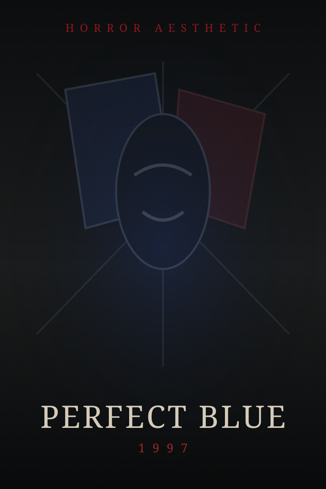

Perfect Blue (1997)
Режиссёр: Сатоси Кон · Психологический хоррор, анимация
Граница между образом, который видит публика, и личностью, которую пытается сохранить Мима, постепенно исчезает.
Сатоси Кон превращает историю бывшей поп-идолки в тревожный лабиринт наблюдения, двойников и распада идентичности. Монтаж намеренно лишает зрителя устойчивой точки зрения: сцены, воспоминания и постановочные образы начинают подменять друг друга.